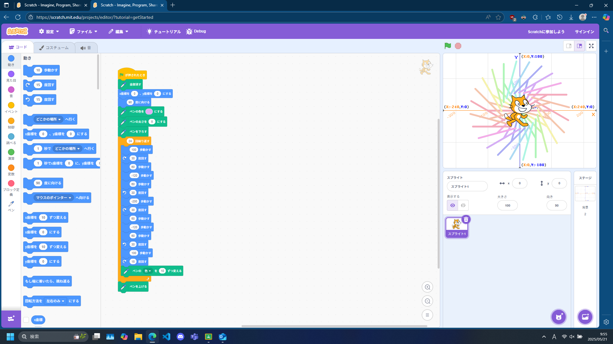
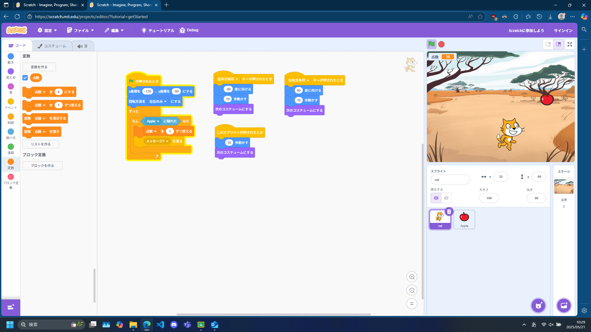

1週目のレポート ： 公大高専１年実習I-1
3a班15番 KY
第1週目
1-1 サイエンスアート

1.内容
ペン拡張機能を使用して模様を描くプログラム。
外から中心に向かって描かれる円と、その線の周りに配置されている線を書くプログラムをそれぞれ作って実装。
2.感想
scratchを使用したのがとても久しぶりで、またとてもペン拡張機能を使用することが少なめだったので楽しい。
1-2 ゲーム

1.内容
リンゴをキャッチするとスコアが増えるプログラム。
猫には移動するためのプログラムとリンゴに触れたときにスコアを増やしてメッセージ1を送信するプログラム、
リンゴにはランダムに移動し落ち、メッセージ1を受け取ると消えるプログラムがそれぞれ書いてある。 2.感想
変数とメッセージを使用するのがとても面白く、
またこれがゲームとして動いたときに達成感を感じた。
1-3 ホームページ作成
私のホームページ
1.内容
テンプレートのリポジトリをforkし、github pagesを使用して公開したホームページ。
一部を自分の名前にしたり、URLを差し替えたりして編集している。
2.感想
github pagesを使用してページを作るのは今もやっているものの、
Forkはあまり使わず、また設定も一度できればほとんど手を付けないので、とても楽しかった
各ページへのリンク
1週目のレポート
2週目のレポート
3週目のレポート
私のホームページ